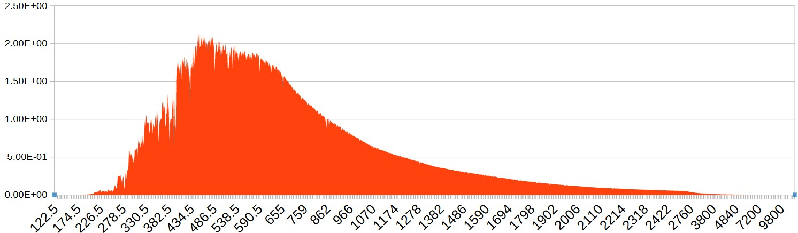

Stay tuned for the automated, coding-including remote sensing training programs, and even softwares! (Of course, you will need to have the fundamentals first.)

Training programs organized by FIRE-AE and their materials are in this page.
Stay tuned for the automated, coding-including remote sensing training programs, and even softwares! (Of course, you will need to have the fundamentals first.)
Chapter 4: Empirical Modelling
Chapter 3: Semi-analytical Modelling
Chapter 2: Analytical Modelling

Chapter 1: Remote Sensing Modelling Introduction
Training Name: Remote Sensing/Teledetection Modelling
Introductory Module
Target Audience: Beginner level
Language: English or Turkish
Duration: 3 hours
Chapters:
1 – Introduction to Modelling in
Remote Sensing
2 – Analytical Modelling
3 – Semi-analytical Modelling
4 – Empirical Modelling
You can find the modelling course description summary document here
Chapter 4: Practice Oriented Tools

Chapter 3: Key Data Providers
Chapter 2: Resolutions and Missions
Chapter 1: Introduction to the Concepts and Practice in GIS/Remote Sensing
Training Name: Remote Sensing/Teledetection Part 1 (Intro)
Introductory Module
Target Audience: Beginner level
Language: English or Turkish
Duration: 6 to 8 hours
Chapters:
1 – Introduction to Concepts and Practices in
GIS/Remote Sensing
2 – Resolutions and Missions
3 – Key Data Providers
4 – Practice Oriented Tools
You can find the course description summary document here